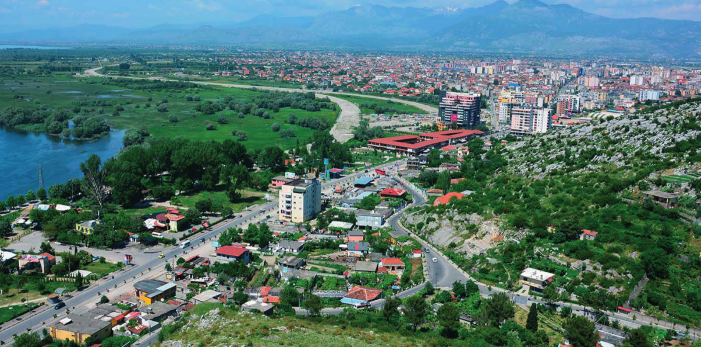

Traditat dhe trashëgimia jonë
Ruajmë traditat tona
Situata 1.
Mali, bashkë me prindërit e tij, u ftuan për vizitë nga disa miq të vjetër në qytetin e Shkodrës, në Shqipëri. Gjatë vizitës së tyre, Mali provoi një pjatë me ushqime tradicionale që s’e kishte ngrënë kurrë më parë.
Në bashkëbisedim me prindërit, ai kishte kuptuar që pothuajse çdo vend kishte karakteristikat e tij në ushqim, në veshje, në të folur, që e dallonin nga vendet e tjera. Për Malin, ushqimi ishte më i veçantë se ushqimet që ai kishte provuar. Ajo që i bëri shumë përshtypje ishte mikpritja që iu bë në familjen shkodrane dhe humori që i karakterizonte ata gjatë gjithë kohës. Familja e Malit u prit me shumë dashuri. Atyre u shërbyen çaj dhe ëmbëlsira, duke kaluar, kështu, çaste shumë të bukura.
Mali u miqësua shumë me Tomorin, djalin e familjes shkodrane dhe së bashku kaluan tërë pasditen. Tomori i kishte ndarë të gjitha lodrat me Malin dhe e kishte bërë atë që të ndihej si në shtëpinë e vet.
Gjatë kthimit për në shtëpi, Mali i tha babait që ishte befasuar nga mikpritja. Babai i tha Malit se shqiptarët këtë traditë e kanë të trashëguar nga paraardhësit.
